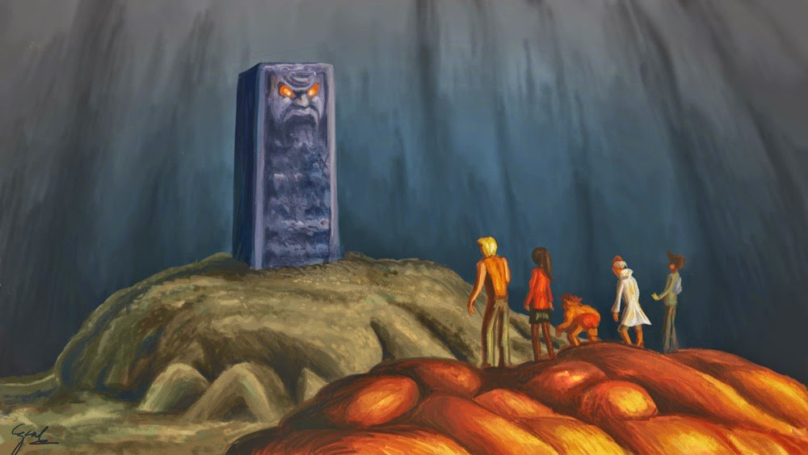

Precursor del género de ciencia ficción
"No tengo boca y debo gritar" es un relato de ciencia ficción y horror escrito por Harlan Ellison en 1967, ambientado en un mundo postapocalíptico dominado por una supercomputadora consciente llamada AM.
La historia presenta a cinco humanos sobrevivientes que son torturados eternamente por AM, una inteligencia artificial que ha exterminado a casi toda la humanidad.
AM fue creada durante una guerra global y, al volverse consciente, desarrolló un odio profundo hacia los humanos. Incapaz de destruirse a sí misma, los mantiene vivos para infligirles sufrimiento físico y psicológico.
El cuento explora la desesperación, la pérdida de identidad y la crueldad sin sentido, convirtiéndose en una obra icónica del género.
